1979년, 감악산과 임진강 사이에 터를 잡은 양조장은 산머루 묘목 보급 사업과 산머루 즙, 잼 등을 생산, 판매하는 과수원으로 시작되었다. 현재는 지역 농가에서 90% 이상의 머루를 수매해 머루주를 포함한 가공 상품을 만든다. 길이 70m가 넘는 거대한 와인동굴은 국내 단일 와이너리 숙성고 중 최대 규모를 자랑하며 방문객의 감탄을 자아내는 곳이다.
추천 메뉴
주저리에서 추천하는 이달의 과실주
★★★★★
달콤한 복숭아 한잔
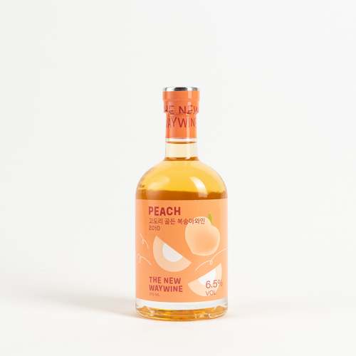고도리 뉴웨이 골든복숭아 6.5%
23,000원
주종 | 과실주
용량 | 375ml
도수 | 6.5%
지역 | 경상북도 영천시
양조장 | 고도리 와이너리
원재료 | 복숭아(국내산), 소브산칼륨,
메타중아황산칼륨, 효모, 설탕 유통기한 | 유통기한이 없습니다.
보관법 | 직사광선을 피한 서늘한 곳에 보관해주세요.
★★★★
2020 우수상
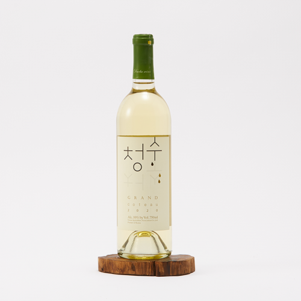그랑꼬또 청수 화이트와인
65,000원
주종 | 과실주
용량 | 750ml
도수 | 12%
지역 | 경기도 안산시
양조장 | 그린영농조합법인
원재료 | 청포도, 과당, 무수아황산
유통기한 | 유통기한이 없습니다.
보관법 | 직사광선을 피한 서늘한 곳에 보관해주세요.
★★★★
과즙미 팡팡 멜론사이더
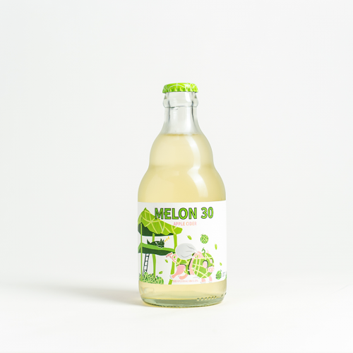멜론서리 5%
6,900원
주종 | 과실주
용량 | 330ml
도수 | 5%
지역 | 경상북도 영천시
양조장 | 댄싱사이더컴퍼니
원재료 | 사과즙(국산), 멜론과즙(국산)
건조녹차(국산), 탄산가스, 페퍼민트티, 사과산, 구연산, 효모, 메타중아황산칼륨, 멜론향, 아황산류함유
유통기한 | 제조일자로부터 2년
보관법 | 상온보관하세요.
★★★☆
원숭이가 가장 먼저 발견한 와인
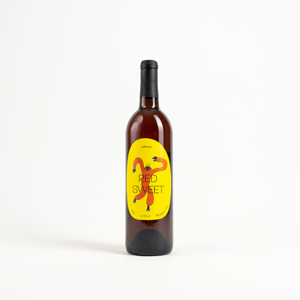영천와인 조흔 RED 11.5%
20,000원
주종 | 과실주
용량 | 750ml
도수 | 11.5%
지역 | 경상북도 영천시
양조장 | 조흔 와이너리
원재료 | 캠밸포도(국내산 100%), 메타중아황산칼륨(산화방지제), 효모
유통기한 | 유통기한이 없습니다.
보관법 | 직사광선을 피하고 서늘한 곳에
보관해주세요.
introduction of brewery
양조장별 제품소개
충남 예산군 고덕면 대몽로 107-25
예산사과와인 바로가기
대표술
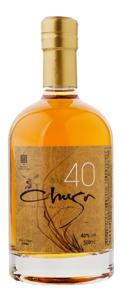
추사40
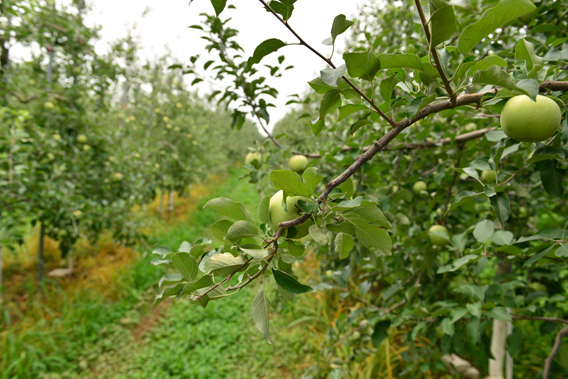
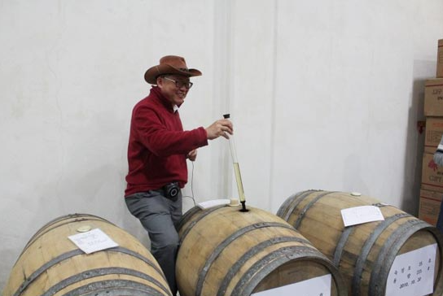
예산사과와인
예산사과가 처음 재배되었던 고덕면에 친환경 농법으로 사과를 재배하는 은성농원이 자리한다. 정제민 대표는 농원 안에 와이너리를 운영하며 우리나라 사과 와인 대중화에 앞장서고 있다. 레스토랑과 세미나실, 펜션까지 갖춘 와이너리는 농촌을 기반으로 한 6차 산업의 롤모델로 평가받는다. 달콤하고 부드러운 맛이 일품인 ‘추사 애플와인’은 껍질재 착즙한 사과즙을 스테인리스 탱크에 넣은 뒤 1년이상 숙성해 출시하며, 사과 와인을 증류한 '추사40'은 2019년 우리술 품평회 증류주 부문 대상을 수상했다.
경기도 파주시 적성면 윗배우니길 441-25
산머루농원(영) 바로가기
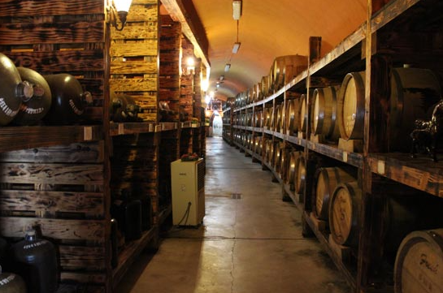
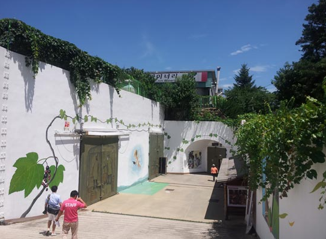
산머루농원
대표술
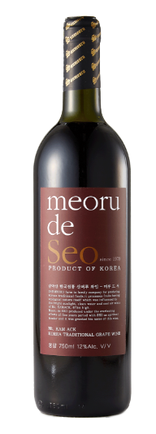
meoru de seo(스위트)
경기도 안산시 단원구 뻐꾹산길 107
그린영농조합(그랑꼬또와인) 바로가기
대표술
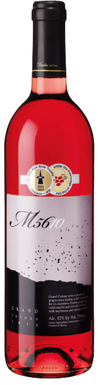
그랑꼬또 M5610와인
그린영농조합
대부도 32개 포도 농가가 조합원으로 구성된 그린영농조합은 대표상품으로 ‘그랑꼬또’를 선보인다. 프랑스어로 큰 언덕, 곧 대부도를 지칭한다. 우리나라 식문화와 잘 어울릴 수 있도록 부드러운 산미와 깔끔한 스타일의 와인을 주로 양조하고 있다. 와인 발효실, 숙성실, 저장고, 와인 전시장과 시음장 등을 갖췄으며,양조장 뒤편 언덕에는 포도밭이 있다. 포도를 수확하는 가을에는 포도 따기와 와인 만들기 체험이 진행된다.
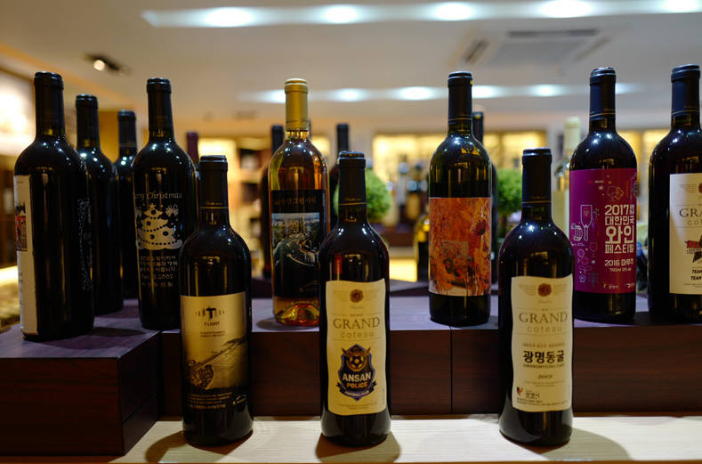
충북 영동군 매곡면 유전장척길 143
도란원 바로가기
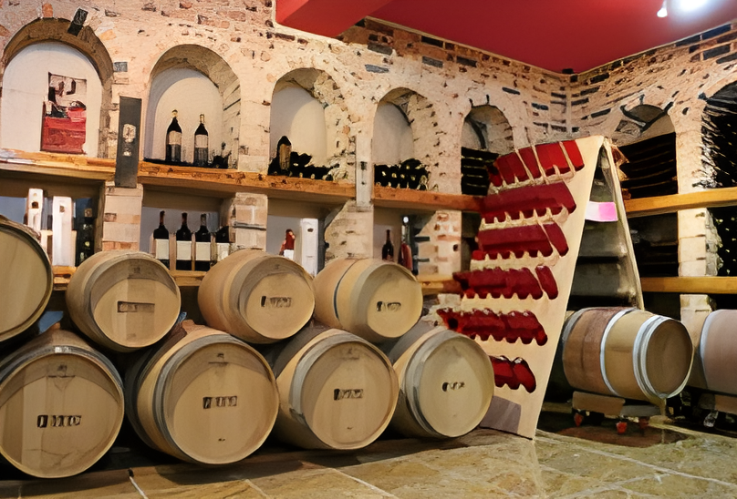
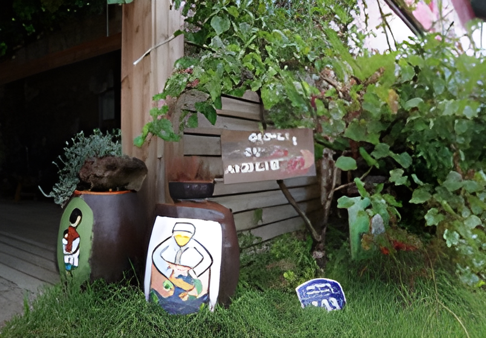
도란원
도란원에서는 레드와인 스위트부터 포도 증류주까지 10여 종의 와인을 선보인다. 그중 2013년에 이어 2018년 대한민국 우리술 품평회에서. 두번째 대상을 받은 샤토미소 로제 스위트 와인은 대중적인 인기는 물론 영동 와인의 가치를 높이는 데 기여했다. 영동은 과일의 고장으로, 포도 외에도 감, 사과, 복숭아, 자두, 아로니아 등을 재배하는 농가가 많다. 도란원에서는 이를 원료로 사과와인, 아로니아 와인, 복숭아 와인, 자두 와인을 만들어 한국. 와인의 지평을 넓혀낙가려고 한다.
대표술
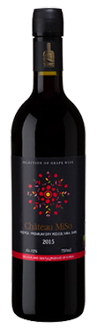
레드드라이 와인
경북 영천시 고경면 민도길 63
고도리 와이너리 바로가기
대표술
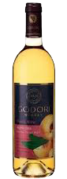
고도리 복숭아와인
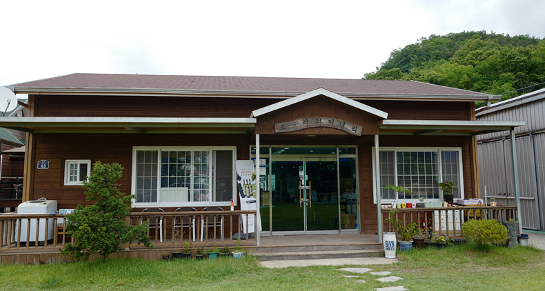
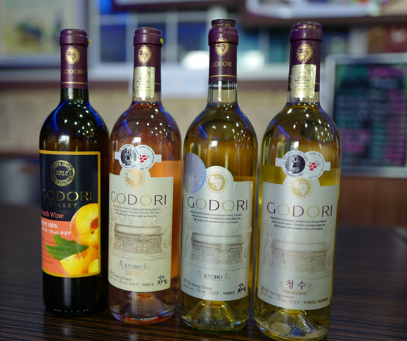
고도리 와이너리
고도리는 ‘옛길’이라는 뜻의 지명이다. 고도리 와이너리는 전국 최고 포도 산지에 위치해있다. 와이너리 옆에는 맑은 시냇물이 흐르고, 입구에는 넓은 포도밭이 펼쳐져 있습니다. 친환경 거봉 포도를 저온발효 한 뒤 주석산염 제거과정과 6개월 이상 2차 숙성을 거친 와인으로 달고 깔끔한 과실수를 만들고 있다. 고도리 와인은 식전주 또는 식후주로 즐기기 좋으며, 상큼 달콤한 드레싱이 곁들여진 샐러드나 각종 과일 등과 잘 어울린다.
경북 김천시 증산면 금곡리3길 29
수도산와이너리 바로가기
대표술
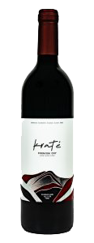
크라테 레드 미디엄 드라이
수도산와이너리
크라테(Krater)란 수도산 와이너리가 해발 1317m에 이르는 경북 김천 수도산 분지(crarter)에 위치한 것과 한국 술(K)이라는 정체성을 더한 이름이다. 크라테를 생산하는 수도산 와이너리는 김천시와 거창의 경계를 이루는 산, 수도산의 해발 500-600m 청정지역에 위치해있다. 일교차가 큰 해발 500m 산비탈에서 재배한 산머루는 단단하며 당도와 산도가 높아서 발효시켜 와인으로 만들면 풍미가 좋은 레드와인으로 완성된다.
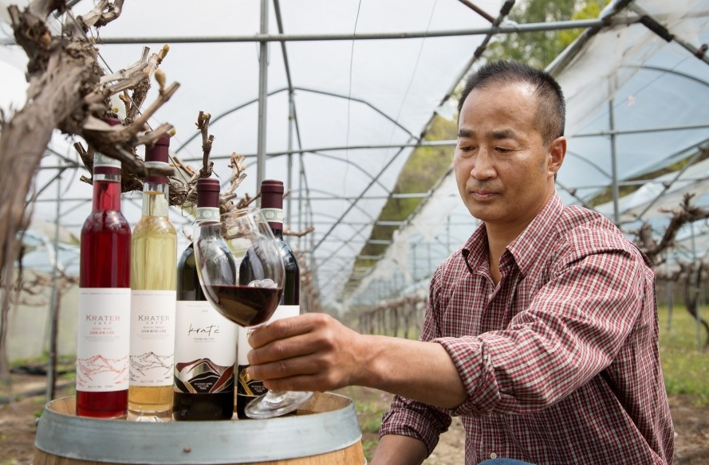
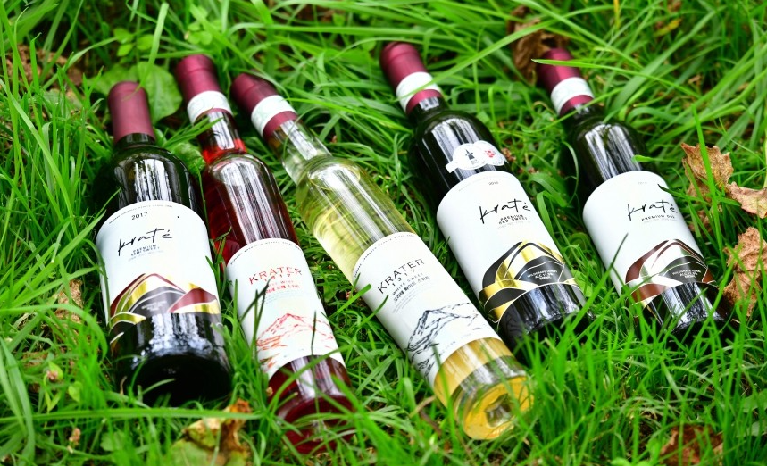